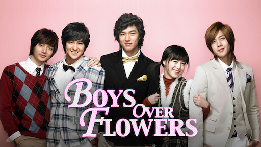

Este paginas encontraras 4 tipos de doramas diferente entre esos esta boy over flower
Este dorama se trata de la historia de una chica llamada Geum Jan Di una chica
sencilla y humilde que ayuda a sus padres
en el negocio de tintorería con servicio a domicilio,
ella lleva una importante entrega a un chico de la prestigiosa escuela Shin Hwa.
Al llegar a la escuela se da cuenta que hay un chico que está por saltar de la azotea para suicidarse, sin
pensarlo dos veces Jan Di sube de inmediato ya que es justo él el dueño de la entrega y,
unos minutos después, Jan Di termina convirtiéndose en “la chica maravilla” al salvarlo de la muerte.
Este acontecimiento causa furor en las noticias,tanto que se le ofrece una beca completa para poder estudiar
en la prestigiosa escuela.
Gu Jun Pyo, Geum Yoon , Ji Hoo, So Yi Jeong, Song Woo Bin y Jan Di,Yoon
Estos son los protagonista de Boy over flower

Los que aparecen en la imagen son los chicos mas ricos de Corea conocidos como los famosos F4...
Los F4 y la tarjeta roja
Cuando algún alumno recibe la famosa carta roja con la marca F4,
es la clave para que todos los demás compañeros hagan su vida imposible y sean el blanco
de bromas pesadas y bullying, en las que nadie tiene el valor de intervenir.
Ante todas estas injusticias Jan Di los enfrenta sin miedo,
cuestionando la actitud de su líder, sin imaginarse las consecuencias a las que se enfrentaría.
Ella es merecedora de la famosa tarjeta roja,
siendo víctima de una incansable serie de tortura física por parte de todos,
desde lanzarle comida y ser golpeada en repetidas ocasiones.
Si te interezo este drama te recomiendo que toques el boton , tocalo!! , tocalo!! >w